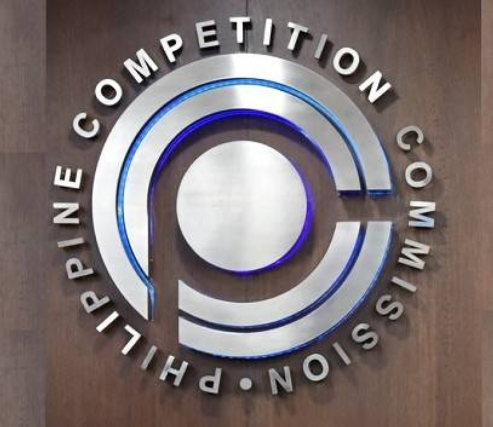
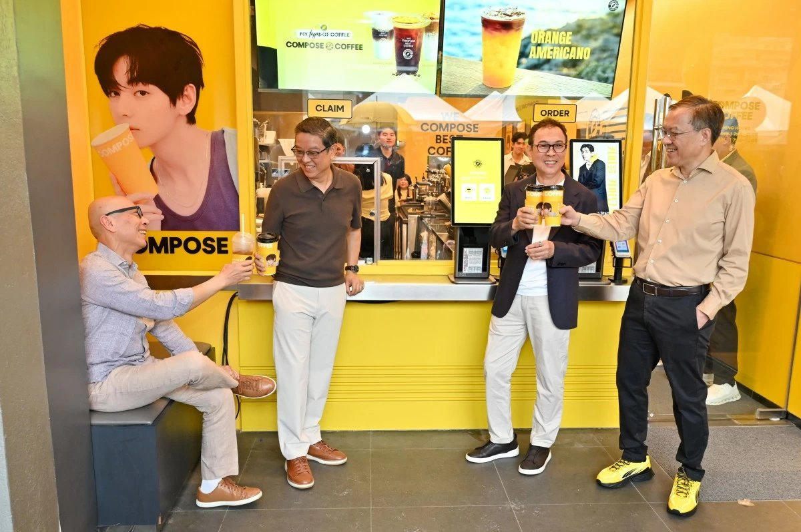
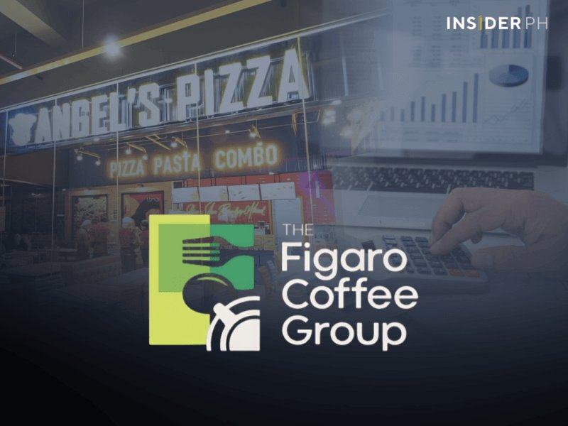

Tape
SaladStop just put a number on protein: 60% plant by 2030, tied to net-zero. That’s a sourcing brief, not a vibe. Same week, Robinsons Retail leaves the PSE for real. URC hands Nissin the majority on noodles. Jollibee still opens Compose on franchise while cutting the year’s store count.
For Calamba: watch private grocery formats and value coffee slots on the estate edge. Don’t wait for a press release about your chicken or rice quote.

SaladStop: 60% plant protein by 2030
31 Aug 2026
SaladStop! Group targets at least 60% of protein from plant sources across 80+ shops in Asia (PH included), tied to net-zero ops by 2030. CEO Adrien Desbaillets: legumes, seitan, nuts, grains, greens, mushrooms already on SaladStop, Heybo, Wooshi, Smoosha, FreshKitchen. Lever Foundation backed the benchmark. B Corp since 2023; first Asia restaurant group to carbon-label its full menu (2020).
Open the piece
Robinsons Retail leaves the PSE today
31 Aug 2026
RRHI delists Aug 31 after PSE approval Aug 19. JE Holdings tender (about P11.1B for 229.58M shares) took the Gokongwei group to 99.69%. Trading suspended since July 14. Supermarket, Marketplace, Southstar, Handyman, Toys “R” Us, Daiso keep running private. Stanley Co: still “retailer of choice.”
Open the piece

PCC clears URC sale of 21% Nissin JV
31 Aug 2026
PCC cleared URC’s sale of a 21% stake in Nissin Universal Robina to Nissin Foods Asia (cert Aug 25). Nissin goes to 70%; URC to 30%. Close targeted Jan 7, 2027; price by Dec 2026. Nissin leads innovation and brand; URC stays local operator and route-to-market. Instant noodles JV since 1994.
Open the piece

[promo] Compose Coffee opens; franchise next
31 Aug 2026
Jollibee Group opened Compose Coffee’s first PH store at Market! Market! (BGC) Aug 7, start of a five-year nationwide plan. Korea model: 3,000+ stores, 1,000 added in under 18 months. PH expansion is franchise-led. Aim: largest Compose network outside Korea. Joseph Tanbuntiong heads the local push vs a Starbucks-heavy coffee/tea market.
Open the piece

Figaro parks Angel’s Pizza in its own co
31 Aug 2026
Figaro got SEC clearance to move Angel’s Pizza into Angel’s Pizza Inc. via asset-for-share swap. Angel’s did about P1.1B, or 92%, of Figaro’s Q1 revenue. Structure stays wholly owned; no sale announced. Liu family says the vehicle is for growth, efficiency, and possible domestic/international expansion.
Open the piece